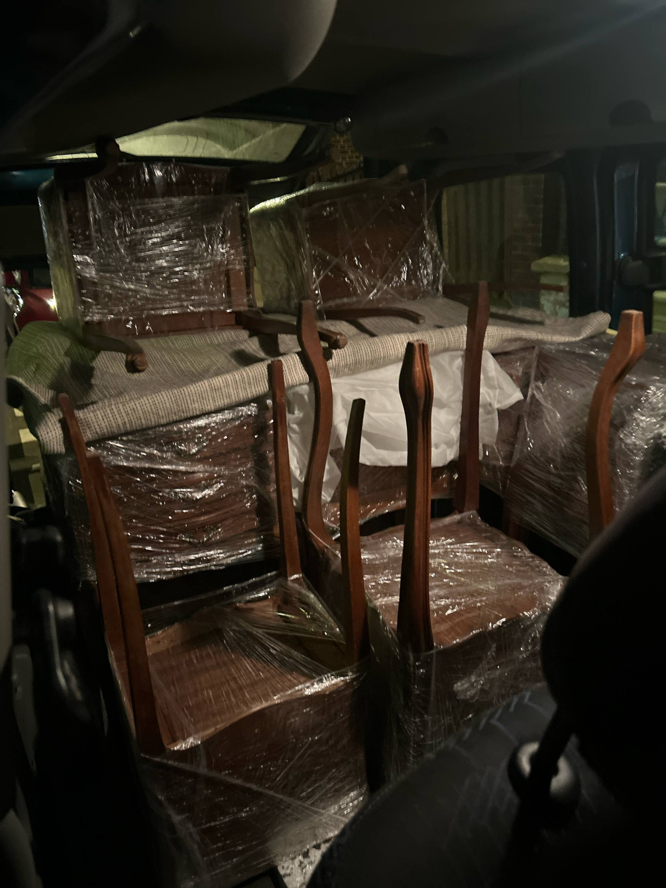
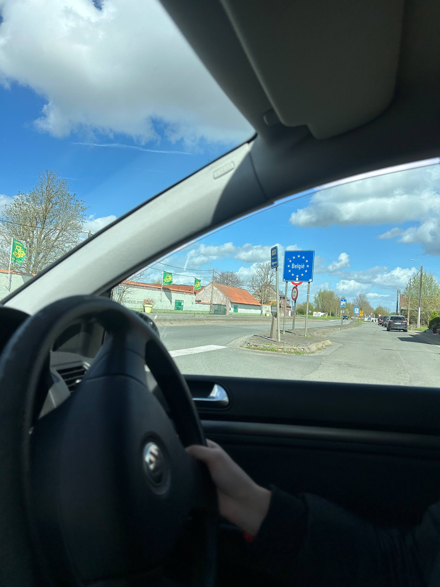
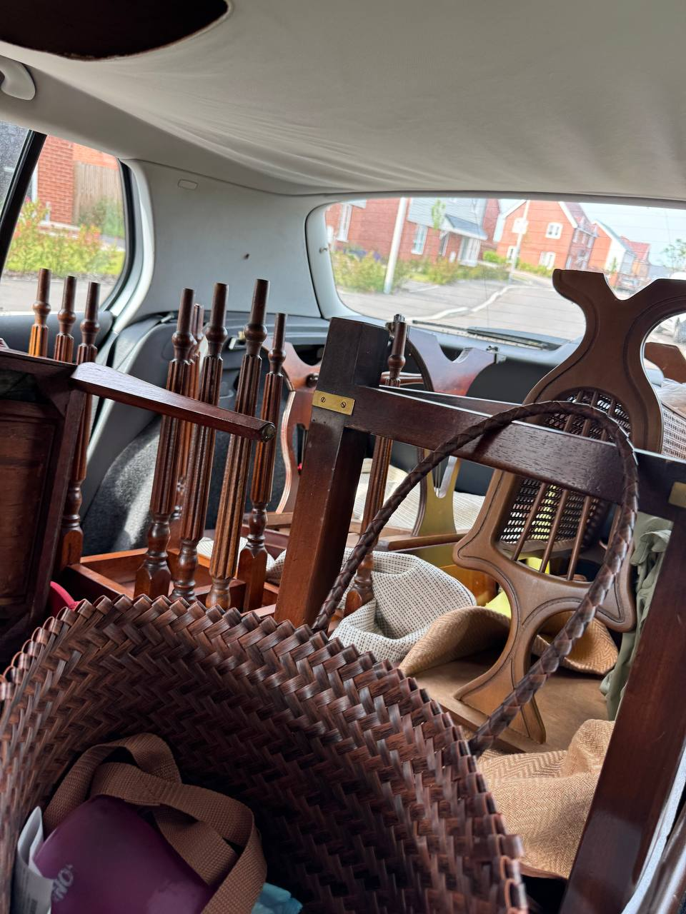

Last updated: 6 April 2026
Sourcing Reselling Stock from France: UK Guide to Driving, Customs & Costs
Vintage items that cost £30-40 at UK car boot sales and charity shops can be found for €5-10 in French vintage shops — roughly 2-3x cheaper for the same goods. We drove to northern France via Eurotunnel for a weekend sourcing trip and came back with a full car.

Many sellers at UK reselling events already source their stock from France. After hearing this repeatedly, we decided to try it ourselves. This guide covers everything we learned: how to get there, what your car needs, how customs works, and what it actually costs.
"We kept asking sellers where they get their stuff. The answer was always France. So we checked French Facebook Marketplace and local sites — prices really are much lower for the same items." — Oleksandr Prudnikov, FlipperHelper developer and active reseller
How do you get to France for a reselling trip?
The Eurotunnel Le Shuttle is the fastest option — 35 minutes from Folkestone to Calais. You drive your car onto a train and drive off the other side. It cost us about £160 return, booked the day before on an Easter bank holiday weekend. Off-peak and advance bookings are typically cheaper.
- Book online at Eurotunnel — create an account and complete online check-in with passport details for every passenger
- Arrive early — the site says 1 hour before departure, but allow more. Our departure was moved forward and we missed our slot by minutes. We waited 30 minutes for the next train
- The crossing is simpler than an airport — show your documents, drive through, no baggage checks. There are toilets both at the terminal and on the train
- Navigation can be confusing at the terminal — roundabouts and lane splits aren’t always well signed. Use Google Maps and don’t hesitate to ask staff
What car requirements do you need for driving in France?
You need insurance, documents, safety equipment, and an ecological sticker. Most of these are one-time purchases that you reuse on every trip. Here’s the full checklist:
Documents
- European insurance cover — check with your provider that your policy covers driving in France. We have Admiral and they provided a European cover letter
- Original V5C logbook — must be the physical original, not a photocopy
- Original driving licence — photos of your licence are not accepted if police stop you
Car stickers and equipment
- Crit’Air ecological sticker — required for driving in cities like Lille and Paris (similar to London’s ULEZ). Costs about €5 online. Fine without one: €135. The online order confirmation is sufficient while waiting for the physical sticker to arrive by post
- UK sticker — required on the rear of the car, even if your number plate shows GB
- Headlight deflector stickers — to avoid dazzling oncoming drivers with UK-spec headlights
- Reflective vests — one per passenger, legally required in France
- Warning triangle — legally required to carry in the vehicle
Nobody stopped us or checked any of this on our trip, but fines apply if you’re pulled over without them. We decided not to risk it.

What is driving in France actually like?
Driving on the right side of the road was less intimidating than expected, but speed limits change constantly. In the UK you might stay at 60 mph for 20 miles. In France, expect 50-70-80-50-30 km/h changes every few hundred metres.
- Everything is in km/h — adjust your speedometer display before crossing
- Stop means stop — in France you must come to a full halt at stop signs for a couple of seconds. Rolling through (common in the UK) is a fineable offence
- Roundabouts work differently — indicator timing and priorities are not the same as in Britain
- Google Maps is less reliable — not all shops or events appeared on the map, and some marked locations were hard to find in reality
- Parking was free everywhere — we spent two full days driving around and never paid for parking once
How do you declare goods at UK customs when importing for reselling?
You need an EORI number and you declare everything online at GOV.UK. The process is surprisingly quick — about 10 minutes from start to payment.
Before the trip
- Register as a sole trader with HMRC if you haven’t already
- Apply for an EORI number on GOV.UK — it’s free and you can use it immediately with just the online confirmation, even before the letter arrives
After shopping
- Declare goods online at GOV.UK — we did this from a McDonald’s Wi-Fi on the way back to the Eurotunnel
- Group items by category — for example, “6 paintings, total value €100”. You don’t need to list each item individually
- Pay by card — HMRC charges are taken directly from your debit or credit card
What taxes apply?
- 20% VAT on the declared value of all goods
- Import duty — the rate depends on the item category. If you cannot prove the goods were made in the EU, additional duty may apply
- For goods under £1,000 total value, the process is simplified
- For a car load under £2,500 and 1,000 kg, you use the simplified customs process
Having all our purchases already tracked with prices and EUR-to-GBP conversion made the declaration straightforward — we just read off the categories and totals from FlipperHelper.

What does a France sourcing trip actually cost?
The first trip is the most expensive due to one-time car requirements. Every trip after that is mainly Eurotunnel plus fuel.
One-time costs (first trip only)
- Reflective vests: ~£5-10
- Warning triangle: ~£5-10
- Headlight deflectors: ~£3-5
- UK sticker: ~£2-3
- Crit’Air sticker: ~€5
Recurring costs (every trip)
- Eurotunnel return: ~£100-200 (varies by booking time and date)
- Fuel: depends on distance driven in France
- 20% VAT + duty on goods purchased
Even with all costs factored in, the savings on stock are substantial. Items that retail for £30-40 at UK markets cost €5-10 in French vintage shops. That margin easily absorbs the travel and tax costs.
Tips for your first France sourcing trip
- Check Facebook Marketplace France before you go — verify that prices genuinely are cheaper for what you sell. Search in French cities near Calais: Lille, Arras, Amiens
- Plan your route around vintage shops or a verified brocante — we didn’t find any flea markets or events on our first trip because we didn’t know where to look. Since then we’ve built a verified calendar in our Best French Brocantes 2026 guide — pick a Sunday with a mega-event as the anchor, fill the rest with vintage shops within 50 km
- Bring a laptop — for filling in the customs declaration on the way back. Any Wi-Fi will do
- Track every purchase as you go — you’ll need exact category totals and values for the customs declaration. Don’t rely on memory (see our guide on tracking reselling profits)
- Allow buffer time for Eurotunnel — departure times shift and you may end up on a later train
- Don’t worry about parking — we found free parking at every location over two full days
Is sourcing reselling stock from France worth it?
Yes — but go in with realistic expectations about the first trip. The one-time costs (vests, stickers, triangle) add up to roughly £25-35. After that, every trip is just Eurotunnel and fuel.
The price difference is real. Items we’d normally pay £30-40 for at UK car boot sales and charity shops were €5-10 in French vintage shops. Even after 20% VAT and duty, the profit margins are significantly better than domestic sourcing.
We’ll definitely be going back. Next time we want to find actual French flea markets and brocantes — not just shops. If you know of good ones near Calais or Lille, we’d love to hear about them.
Frequently asked questions
How much does the Eurotunnel cost for a reselling trip to France?
Eurotunnel Le Shuttle costs around £160 return for a standard car. Prices vary by booking time and travel date. Booking in advance and avoiding bank holidays will get you a cheaper fare. The crossing takes about 35 minutes.
Do I need an EORI number to import reselling stock from France?
Yes — if you are importing goods commercially to resell, you need an EORI number. Apply for free on GOV.UK. Sole traders can use the number immediately with the online confirmation, before the physical letter arrives.
What taxes do I pay when importing reselling stock from France to the UK?
You pay 20% VAT on the declared goods value, plus import duty that varies by item category. The declaration is done online at GOV.UK and you pay HMRC directly by card. The whole process takes about 10 minutes.
What car requirements do I need for driving in France?
European insurance coverage, original V5C logbook, original driving licence, UK sticker, reflective vests for all passengers, warning triangle, headlight deflector stickers, and a Crit’Air ecological sticker for cities like Lille and Paris (€5 online, €135 fine without one).
Is it worth driving to France to source reselling stock?
Yes — vintage items that cost £30-40 at UK car boot sales can be found for €5-10 in French vintage shops. Even after Eurotunnel, fuel, and 20% VAT plus duty, margins are significantly better. The first trip costs more due to one-time car requirements, but every subsequent trip is cheaper.
Related reading
- Best French Brocantes 2026: UK Reseller Sourcing Calendar — the verified mega-events worth planning around (Lille Braderie, Réderie d’Amiens, Foire de Chatou, Brocante de Chambord and more)
- What Is a Brocante? UK Reseller’s Guide to French Flea Market Types — the terminology cheat-sheet you need before you go
- Marché aux Puces de Saint-Ouen: UK Reseller Guide — the world’s biggest antiques market, sub-market by sub-market
- Track Sourcing Trip Profit — work out whether each trip was actually worth it
- Best Items to Resell in the UK — what sells well once you bring stock home
- Vintage Market Reselling Guide — sourcing and selling vintage in the UK
Track your sourcing trips with FlipperHelper
Free app for iOS and Android with multi-currency support and automatic exchange rates. Log purchases in EUR, track Eurotunnel and fuel as transport expenses, and see your real profit per trip. Works offline — perfect for markets with no signal.
Download Free on the App StoreGet it Free on Google Play